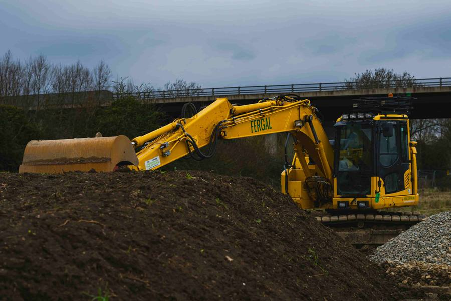

Amiben segíthetünk
Gépi földmunkavégzés
Vállalkozásunk meghatározó tevékenysége a nagy tömegű, gépi földmunkavégzés. 2016-ban több száz millió forintos beruházás keretein belül fejlesztettük gépparkunkat és bővítettük szakembergárdánkat. Földmunka csoportunk vállal alapozási munkálatokat, autópálya kivitelezést, gát és töltések kiépítését, tereprendezést és minden egyéb olyan feladatot, ahol nagy mennyiségű földet kell mozgatni, szállítani.